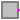
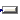

This library is just temporarily present. The components of this library will be present in the future in the Modelica standard library (with the new block connectors) and in the UserInteraction library that is currently under development.
Extends from Modelica.Icons.Library (Icon for library).
| Name | Description |
|---|---|
| Define Real parameter (GUI not yet satisfactory) | |
| Returns true, if at least on element of the Boolean input vector is true | |
| Returns true, if all elements of the Boolean input vector are true | |
|  RadioButton | Button that sets its output to true when pressed and is reset when an element of 'reset' becomes true |
|  NumericValue | Show value of Real input signal dynamically |
| Dynamically show Boolean input signal (false/true = white/green color) |
This is an experimental component to define a Real parameter in the diagram layer. The idea is to drag the icon from the package browser into the diagram layer. Then a window pops up in which the properties of this parameter can be defined (such as the default value). The name and default value of the parameter are displayed in the icon of this component. Whenever clicking on it, the dialog to change parameter settings pops-up.
In Dymola, the described property is not fully available. Currently, when dragging this component in the diagram layer, a dialog pops up in which the properties of the parameter can be defined. However, afterwards, the parameter is not visible in the diagram layer. Making it visible requires to go into the text layer and add an annotation with the component size, resulting for example in:
parameter StateGraph.SetRealParameter name = 2
annotation(extent=[-10,-10; 10,10]);
This change makes the parameter icon visible in the diagram layer. However, clicking on this icon has no effect. Changing parameter properties, such as the default value, still requires to go in to the text layer.
Extends from Real. Modelica.StateGraph.Temporary.anyTrue
Modelica.StateGraph.Temporary.anyTrue
| Name | Description |
|---|---|
| b[:] |
| Name | Description |
|---|---|
| result |
Modelica.StateGraph.Temporary.allTrue
| Name | Description |
|---|---|
| b[:] |
| Name | Description |
|---|---|
| result |
| Name | Description |
|---|---|
| buttonTimeTable[:] | Time instants where button is pressend and released [s] |
| Time varying expressions | |
| reset[:] | Reset button to false, if an element of reset becomes true |
| Name | Description |
|---|---|
| on |
 Modelica.StateGraph.Temporary.NumericValue
Modelica.StateGraph.Temporary.NumericValue
| Name | Description |
|---|---|
| precision | Number of significant digits to be shown |
| hideConnector | = true, if connector is not shown in the dynamic object diagram |
| Value | Real value to be shown in icon |
| Name | Description |
|---|---|
| Value | Real value to be shown in icon |
 Modelica.StateGraph.Temporary.IndicatorLamp
Modelica.StateGraph.Temporary.IndicatorLamp
| Name | Description |
|---|---|
| u |